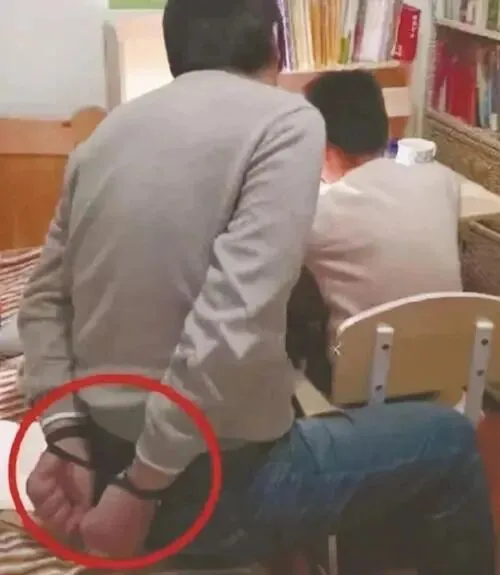

孖仔帮
公众号ID：twinsbang
关注
文|圆圈妈妈
网图|侵删
社会大众看待双胞胎最大的迷思就是要「一模一样」。
这个社会大众当然也包括我自己在内，一个仅有6年养育双胞胎经验，但已经未老先衰的老母亲。
我知道，双胞胎是独一无二的生命个体；双胞胎之间，即便是同卵双胞胎，都会有各方面不同程度的差异。
但真的要我去面对这些差异，并毫无保留地接受，我是真的很难做到。
1
寒假期间，我辅导圆圈兄弟做数学作业，这是一个重型社S现场。
圈圈很快就做完，但是圆圆就比较慢，还不专心，老是搞很多小动作：一会儿咬铅笔，一会儿在橡皮上戳个洞，一会儿看着阳台外面发呆....我看在眼里，心里直冒火。
做到后面，他有一道题不会做。我看了下，这是道培优作业题，是给学有余力的孩子做的，有点超纲。
我本来不想让他做，但是看圈圈一瞬间就做出来了，毫无压力，心里想着，他们俩都是同校同班同老师教，圈圈能做，圆圆应该也能做出来。
可是我高估了他。
他一看题目，愣了一会儿，嘟着嘴，挠着后脑勺，连想都没想就说不会做。
我见他连题目都没有多看几眼，脑子都不动一下，气不打一处，赶紧使出我老母亲的威严，严肃地瞟了他一眼：“认真看题目，好好想想！”
但他无动于衷，应付式地把问题又读了一遍，还是说不会做，我提示了他好久，他还是不开窍，还摆着一副老赖的样子：我就是不会做，你能拿我怎么着。
他这种态度，真是彻底激怒我了，从开始做数学作业就一直没专心过，我早就憋了一肚子火了。我就不明白了，都是同一个受精卵来的，怎么圈圈一下子就把作业做完了，他总是那么磨蹭不专心，遇到难题又不动脑。
现在新仇旧恨一起上，真是越想越气，忍不住对着桌子一顿子猛敲猛捶，有股强烈的冲动想撕掉他的作业，脚上的拖鞋也在蠢蠢欲动。
我可算明白了为什么有些家长辅导孩子作业时要把自己的手给绑起来了，以前觉得这样做很夸张，现在发现这才是人！间！真！实。
辅导娃写作业，我怕了吗？我不怕，就怕一个娃是天使，另一个娃是魔鬼。
真的！心里那个火啊，特别地强烈，在鲜明对比的刺激下，越烧越旺，那种好想揍人的冲动啊，真的如火山爆发般刻不容缓。
我费了一番洪荒之力才压抑住脑门那股要撕作业揍娃的冲动，但吼叫声终究还是憋不住，爆发了。
“为什么圈圈能做出来，你做不出来，你怎么就不向圈圈学习下，认真点，多动脑。”
吼完之后，是真的很爽，因为这一招对圆圆很管用，可能是见我平时很少动怒，这会儿突然发飙，他终于意识到事态严重，赶紧收起吊儿郎当的样子，认真起来。
但是，吼娃一时爽，吼完悔断肠。
一旁做语文作业的圈圈，鄙夷地看着我：“妈妈，你不要那么凶对我哥，你冷静下，让我来教圆圆吧！”
我嘴里还狡辩着说没有，但我知道，我的确是失态了，被圈圈这么一说，我赶紧找了个借口落荒而逃。
2
冷静下来后，发现确实是自己太过了。
一道题而已，有人会做，有人不会做，很正常，怎么搁我这里就仿佛犯了滔天大罪似的，就因为他们俩是双胞胎吗？
是双胞胎又怎么啦？我凭什么要求他们两兄弟必须一样。
尽管他们是同卵双胞胎，一样的年龄，酷似的长相，但也有许多地方不一样。
数控车间的产品还有质优等级，天下没有两粒相同的沙子，更何况是活生生的两个孩子。
而且从小到大，他们哥俩实在有太多不一样了：不一样的作息，不一样的口味，不一样的喜好....我这一路看着他们长大，不都一笑而过，一一接受了吗！
我反问自己，若是他们的同学会做这道题，圆圈不会做，我会觉得无所谓；但不知为何，如果圈圈会做，圆圆不会做，我就是不能接受。
仔细想想，究根结底就是，我对他们必须一模一样太在意了，长相一样、身高一样、甚至连想法，思维，智力都要如出一辙！
这是对双胞胎最大的误解。而我也算是奇葩一根筋了，陷入这个误解中久久无法自拔，愈演愈烈。
圆圆从出生就比圈圈高1厘米，我心里一直有疙瘩，他们是双胞胎啊，圈圈怎么就矮了呢，应该一样高才对啊。所以圈圈稍微少喝点奶，我就急，总是变着法子逼着他多喝点。
现在6岁，他们俩的身高差距2厘米了，我更焦虑了，天天在圈圈耳提命面：”圈儿啊你太矮了，比圆圆足足矮了2厘米，你要多吃点啊，要快点追上圆圆。”
不仅如此，我还有一个邪恶的想法，圆圆别长那么快，等一下圈圈也无妨。于是，看到圆圆有时候吃少了，就睁一只眼闭一只眼，但是对圈圈却格外严厉，近乎苛刻，为了让他多吃追上圆圆，软硬兼施+威逼利诱一起上。
搞得圈圈每次吃饭就很大压力，战战兢兢地端着碗，心惊胆战地偷瞄着我，见我正盯着他，甭管好不好吃，想不想吃，喜不喜欢吃，反正就大口大口吃，大气都不敢出。
每次看着他吃得那么心不甘情不愿，我就心软，发誓下次一定要让他自己决定吃多少，可是一到饭桌，看见两人日渐明显的身高差距，我的脑子又好像被驴踢了一样犯浑短路，继而重蹈覆辙。
3
我曾多次在公号文章中呼吁双胞胎家长，要尊重双胞胎的差异，不管是哪方面，都要全方位地接纳。
现在看来，这话更像是说给自己听的，我也是那个局中人。
我自己不是双胞胎，在教育双胞胎上，只能摸着石头过河，偶有磕碰，难免失望无力，好在还有点仅存的理智去不断反省自己。
冷静完后回到客厅，我换了一种方式重新给到圆圆提示，这一次没有针锋相对，没有刻意比较，就是跟他一起读题，引导他用自己的话去理解题目的意思和要求。
最后，他真的解答出来了。
圆圆放下笔，如释重负，长吁一口气，笑盈盈地问我：“妈妈，我终于会做这道题了，你现在开心点了吗？“
我羞愧到无地自容。
据说，6岁的男孩，最快乐最擅长的事情就是取悦自己的妈妈，妈妈就是他世界的中心，让妈妈快乐，就是他的快乐。
但我呢？我的教育难题还没有答案。
不知道从什么时候开始，爱孩子，不再那么纯粹，总是有很多附加条件，要求他们必须听话，上课认真，不打架，成绩好....
我想，化解对双胞胎最大的误解，最好的办法就是，从孩子的世界出发，及时去回应孩子的爱，这种回应需是单纯柔软的，简单直接的，无条件的。
一点关于双胞胎的教育反思，写在新年的前夕，不小心被我写成了忏悔录，/囧，不知道大家是否有这方面的困扰，欢迎在留言区探讨双胞胎的教育迷思，一起抱团取暖，帮助双胞胎孩子们健康快乐地成长。
最后预祝大家新年快乐，虎年大吉，万事胜意。
今日互动话题
#你的那些双胞胎教育迷思？#
评论区聊一聊呗！
微信公众号：孖仔帮
ID : twinsbang
专注双胞胎孕育，养育，教育经验分享
扫码关注我们
点一下你会更好看耶


